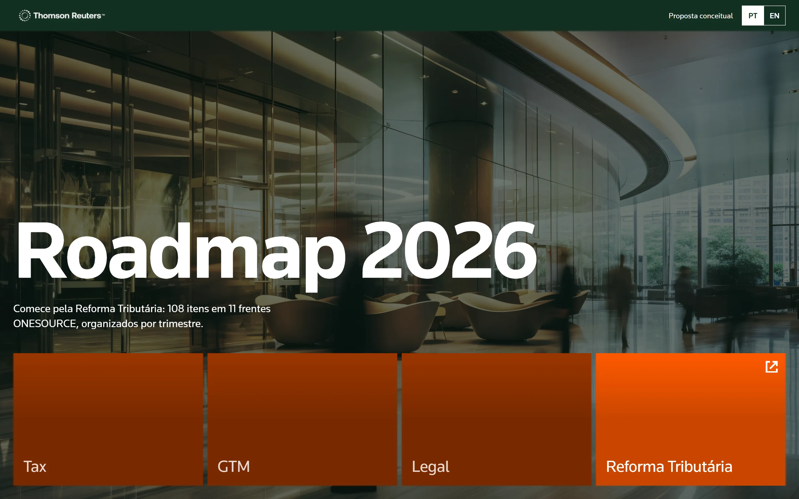
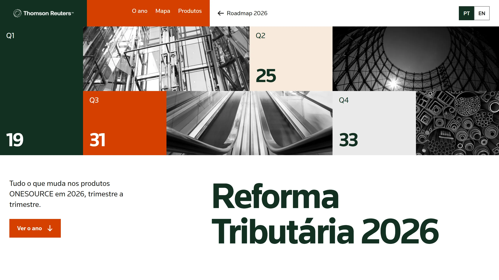

The year as the structure
Quarter panels stack as you scroll and show the highlights of each quarter.
Thomson Reuters · Product roadmap · Proposal
I created this website in 2021, and it’s still live, sharing the product roadmap with customers. With Claude, I created a new proposal in 30 minutes and put it live.

The Tax Reform page gathers 108 items across 11 ONESOURCE product lines, quarter by quarter. On the current website, they appear as long columns of text.
The proposal keeps the content and changes how it’s read, using the colours, type, spacing and icons of the Thomson Reuters Brazil website. It’s a concept proposal, not an official Thomson Reuters website.
The proposal
Quarter panels stack as you scroll and show the highlights of each quarter.
A table crosses the 11 product lines with the four quarters and links straight to each one.
Theme and status filters work across every product line at once.
Each product line has quarter tabs, and items open only when you want the details.
Before & after
Move the divider to compare the current page with the proposal.


Before · Current websiteAfter · ProposalDrag horizontally, tap the comparison or use the arrow keys when the slider is focused.
Try the experience
Open each version to see how it presents the same roadmap.
Created in 2021 and still live, sharing the product roadmap with customers.
Open the current websiteThe roadmap organized by quarter, with a map and filters.
Open the proposal